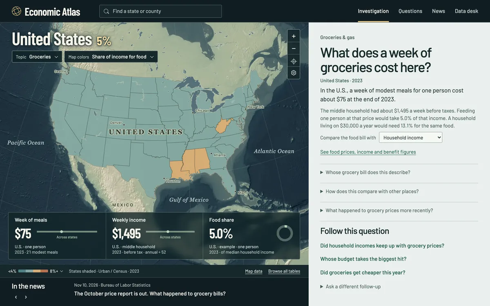
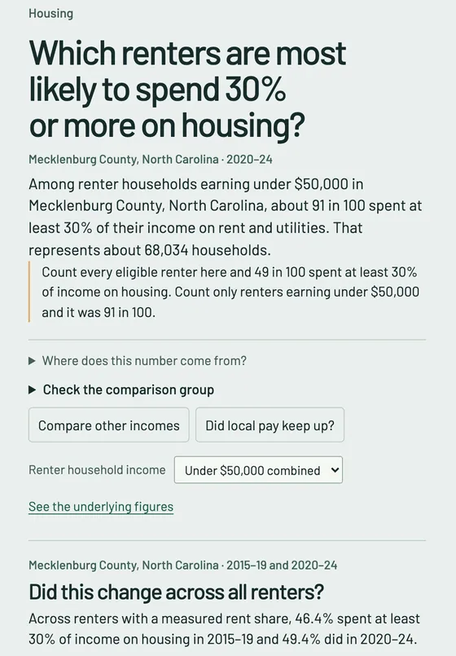
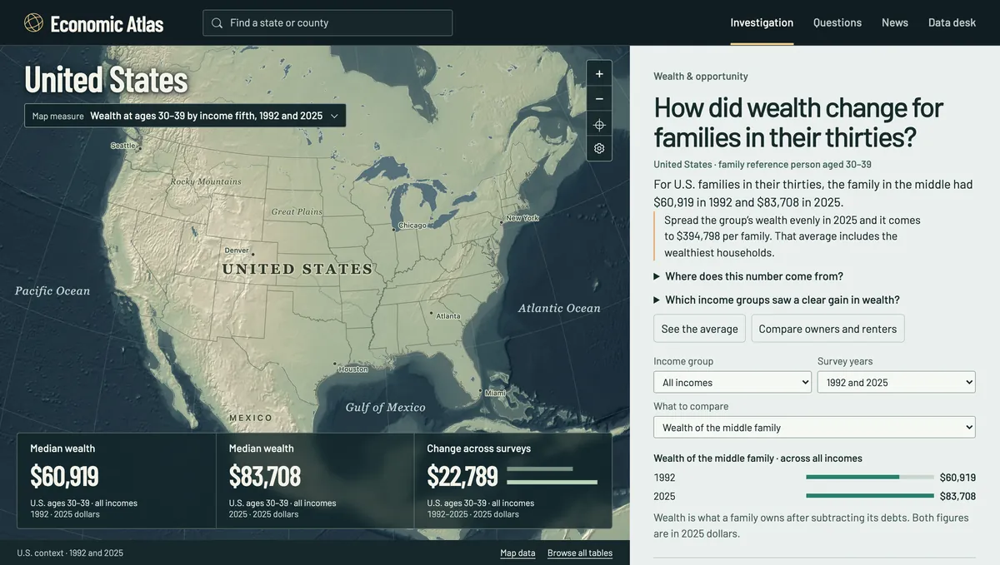
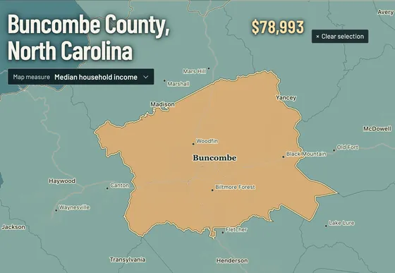
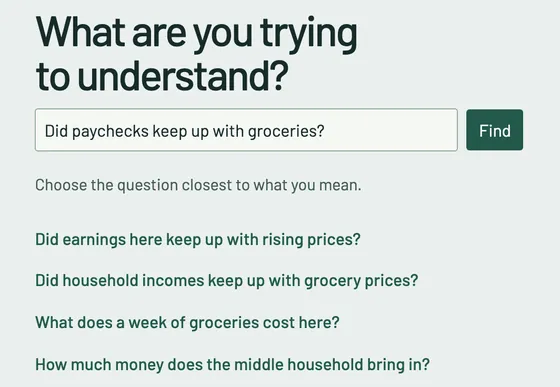

See who a number describes
Economic Atlas is a map-based tool for checking a claim about the economy. You start with a question or a news claim. It shows which people the number counts. You can then see how it changes by income, age and place. It also says what the data can't tell you.
Early prototype · Not public yet · Nothing to try

What you can ask
Who does this number describe?
In 2025, 21.5% of U.S. adults aged 25 to 34 shared a household with a parent. Economic Atlas worked that out from the Census Bureau's Current Population Survey. Count only those living in a parent's home, and the Census Bureau's published counts work out to about 16.4%. The two figures count different people.
What about people who earn less?
Take rent in one county. Switch from all renters to households with income under $50,000. The worked case below shows the change.
What about where I live?
From January 2019 to October 2026, grocery prices for U.S. urban shoppers rose 33.8%. Average hourly pay in private-sector jobs rose 36.8%. Both figures come from the Bureau of Labor Statistics. Pin a county in a state or D.C. and you get one of 23 metro grocery figures, or the figure for its group of states.
What can't this number tell me?
Take U.S. families headed by someone aged 30 to 39, in the Federal Reserve's Survey of Consumer Finances. The middle family's net worth was about $61,000 in 1992 and about $84,000 in 2025, in 2025 dollars. About 77% of the growth in average net worth came from the wealthiest tenth of those families. The two surveys asked different families, so this can't tell you how many individual families gained.
Here's what it looks like





Suppose you rent in Mecklenburg County, North Carolina.
Start with all renters, in the Census Bureau's American Community Survey for 2020 to 2024. Of 200,234 renter households with cash rent and income above zero, 99,003 spent at least 30% of income on rent and utilities. That's about 49%.
Now switch to renter households with income under $50,000. For them it was 68,034 of 74,632, about 91%. That is 41.72 points higher, with a 90% margin of error of plus or minus 1.21 points.

What these figures can't tell you
These are survey estimates of households, and the second group is part of the first. The 200,234 leaves out about 4,300 renter households with zero or negative income and about 4,800 paying no cash rent. The survey doesn't say why rent takes that share, or describe any one household.
Why I'm building this
The economy is usually explained in averages, but people don't live in averages. I hear that inflation is cooling, or that millennials are wealthier than boomers were at the same age. I want to know what that means for people like me.
To check that myself, I'd have to know what to look up and how each survey works. I don't think you should have to become an economist first.
About the pre-beta
Economic Atlas is a working prototype that runs on my own computer. It isn't public, and there's nothing to download or try.
What was checked on 23 November
- None of the 126 source files then on the project's list had changed since they were recorded.
- Twelve data files rebuilt from those sources exactly matched the copies the app uses.
- For eleven of 24 test questions, a separate calculation from the source files matched the Atlas's numbers.
What isn't done yet
- Nobody has tested whether readers understand the answers.
- I update the sources by hand.
- One income figure I rebuilt differs slightly from the published one, and I don't know why.
Questions about the project
Is this an AI chatbot?
No. The numbers come from public data tables and calculations. No outside reviewer has checked them yet. An optional AI model in the browser can only suggest a topic the Atlas already covers, and only when you ask.
Where do the numbers come from?
From the Census Bureau, the Bureau of Labor Statistics, the Federal Reserve and the Bureau of Economic Analysis. Also from the Urban Institute and other published research. Each answer has a panel you can open. It shows the figures and names the source.
What can't it tell me?
It can't tell you why a number changed. Some questions only have national data, so the answer stays national.
Does it cover my county?
The rent figures cover 3,222 counties and similar areas in the Census Bureau's 2020 to 2024 survey. The map hides a figure when its 90% margin of error is wider than ten points. For all renters, that happens in about a third of counties.
Who makes it?
I do. I'm Josh Cottrell-Schloemer.